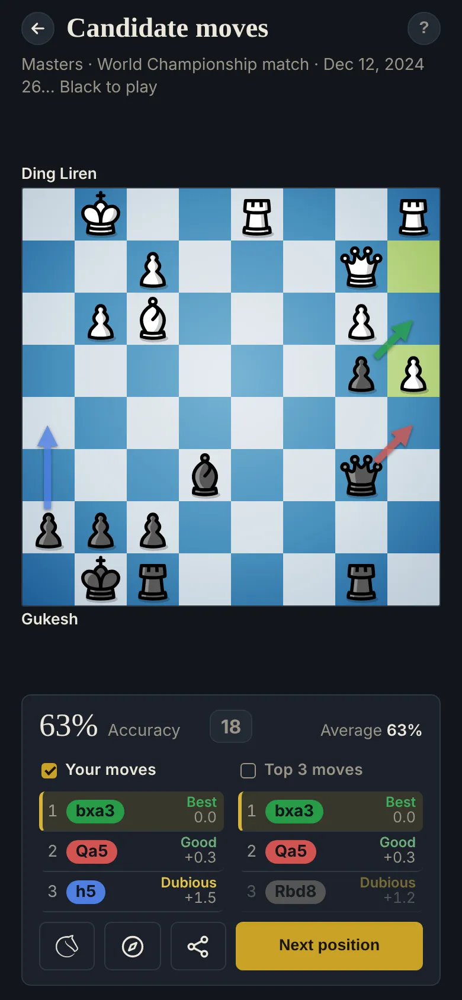

Candidate moves
Find one or more good moves
Most mistakes come from playing the first move that looks good. Alexander Kotov's advice: list a few serious options first, then choose.

How to find them
- Forcing moves first: checks, captures and threats, for both sides.
- Then moves that follow the plan: they make the most of your most decisive imbalances, or reduce your opponent's.
- Keep the game phase in mind, especially when the plan is to improve: in the opening, develop and get your king safe; in the middlegame, find better squares for your pieces and fix your weaknesses; in the endgame, bring your king in and push your passed pawns.
The exercise
Pick 1 to 3 strong moves. Stockfish grades each against its best move: Best, Good, Ok, Dubious, Mistake or Blunder. Dubious or worse scores zero: when unsure, pick fewer.